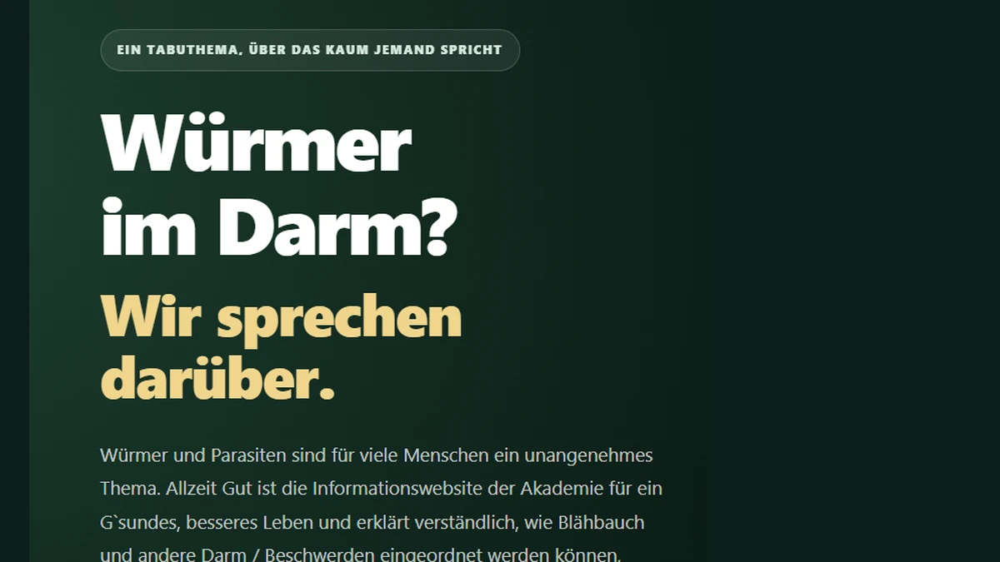
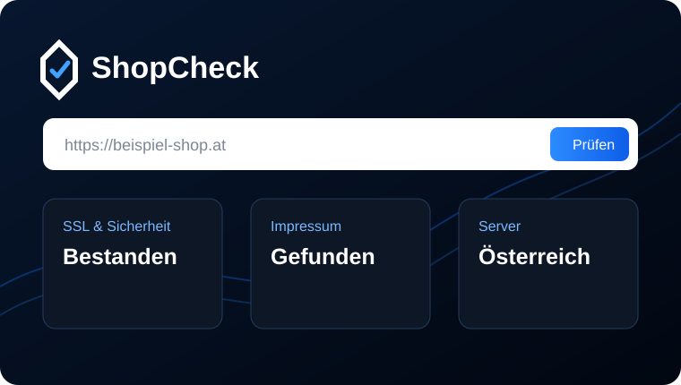
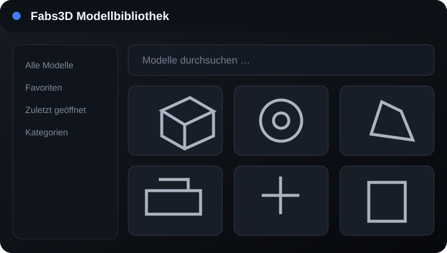
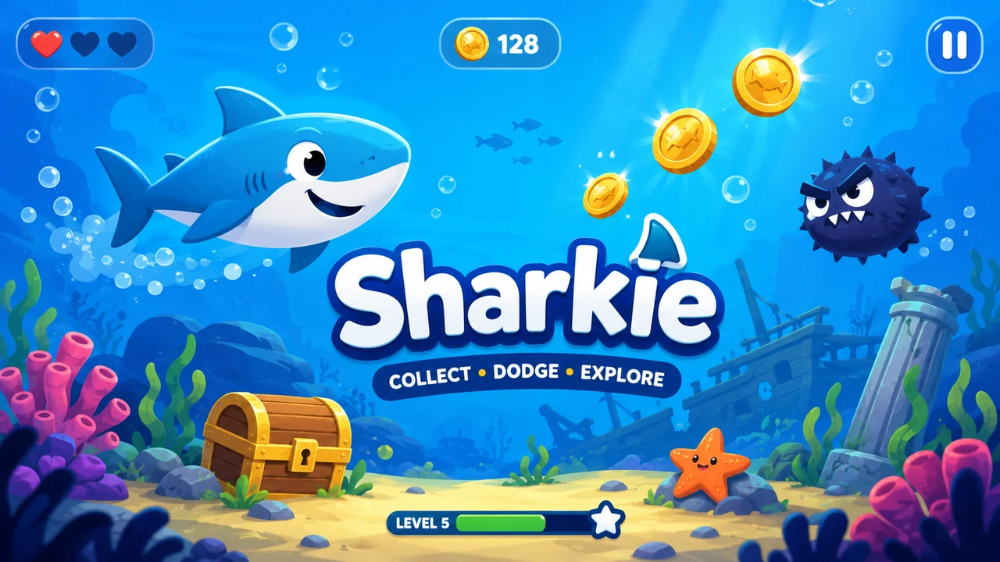

Webentwicklung
Moderne Websites und Landingpages, die auf Desktop, Tablet und Smartphone sauber funktionieren.
Glanzer Digital steht für moderne Webentwicklung, praktische Softwarelösungen und persönliche Betreuung – alles aus einer Hand.
Von der ersten Idee bis zur laufenden Betreuung – klar geplant, sauber umgesetzt und verständlich erklärt.
Moderne Websites und Landingpages, die auf Desktop, Tablet und Smartphone sauber funktionieren.
Individuelle Web-Apps und Windows-Anwendungen, zugeschnitten auf konkrete Anforderungen.
Einfache digitale Werkzeuge, die wiederkehrende Abläufe übersichtlicher und schneller machen.
Änderungen, Updates, technische Pflege und laufende Unterstützung für bestehende Websites.

Kundenprojekt: mehrseitige Informationswebsite mit responsivem Design, Analytics und Adminbereich.

Web-Tool zur strukturierten Prüfung öffentlich erreichbarer Websiteinformationen.

Windows-Anwendung zur Verwaltung, Suche und Vorschau eigener 3D-Modelle.

2D-Browsergame mit Gegnern, Sammelobjekten, Sounds und animierter Unterwasserwelt.
Ich entwickle Websites, kleine Anwendungen und digitale Werkzeuge mit einem klaren praktischen Nutzen. Dabei lege ich Wert auf eine direkte Abstimmung und eine Lösung, die nicht unnötig kompliziert wird.
Ziele, Inhalte, Funktionen und ein realistischer Umfang werden zuerst gemeinsam festgelegt.
Die Lösung wird strukturiert aufgebaut, getestet und während der Umsetzung abgestimmt.
Nach der Fertigstellung folgen Übergabe, Erklärung und bei Bedarf laufende Betreuung.
Beschreibe kurz, was du brauchst. Danach lässt sich ehrlich einschätzen, was sinnvoll umsetzbar ist.